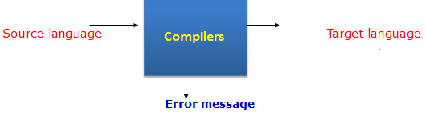

Compilers
- A program that reads a program written in one language (source language) and translates it into another language (target language).
- 
- A source program/code is a program/code written in the source language, which is usually a high-level language
- A target program/code is a program/code written in the target language, which often is a machine language or an intermediate code.
- How does a compiler check that your code is syntactically correct?
- It needs to ensure this before it can produce run-time code (machine code) which can then be executed
- If there are syntax errors, then they need to be removed before you can re-compile
- Different from logical errors in your program (perhaps prolog will be useful here)
- In the past 30 years Noam Chomsky and others have developed new ways to describe the syntax (or grammatical structure) of natural languages such as English.
- This work has proven useful in constructing compilers for level computer languages
- It is customary to express rules using Backus-Naur notation.
- In the notation, the symbol | represents the word or; and angle brackets < > are used to enclose terms to be defined
- Example of BNF grammar symbols can be:
- ::= is (is defined as)
- => is (is defined as)
- & then (followed by)
- | or (sometimes implicit)
- [ ] optional
- ; end of definition
- () bracketing
- BNF definitions contain two types of structure
-
- Terminals – Cannot be reduced
-
- Symbol used: 'Terminals '
- <drink>::= 'tea’ | ‘coffee’
- <course>::= ‘IS’ | ‘CS’
- are examples of terminal
- Non-Terminals – Contain substructures
-
- Symbol used:<Non-Terminals>
-
- <contact>::=<name> <number>
- <contact>::=<name><number><address>
- are examples of non terminal
- More Examples:
-
- Suppose we wanted to define a number of spoon of sugars between 1 and 4
-
- <drink>::=('tea'|'coffee') [<sugar>]
- <sugar>::='sugar' <amount>
- <amount>::= ‘1’| ‘2’| ‘3’| ‘4’
- Another BNF example: postal address
- <postal-address> ::= <name-part> <street-address> <postcode-part>
- A postal address consists of a name-part, followed by a street address part, followed by a postcode part.
- <name-part> ::= <personal-part> <last-name>
- A name-part consists of a personal-part followed by a last name.
- <personal-part> ::= <first-name> | <initial> "."
- A personal-part consists of either a first name or an initial followed by a dot.
- <street-address> ::= <house-num> <street-name>
- A street address consists of a house number, followed by a street name.
- <postcode-part> ::= <town-name> "," <county-name> “,” <post-code>
- A postcode-part consists of a town-name, followed by a comma, followed by a county-name , followed by a comma, followed by a post-code.
- all we have defined is a digit (0, 1, 8, 9…), not a number
- For example, a mobile phone has got 11 digit numbers
- In mathematics and computer science, a digit is a symbol (e.g. “2" or “9") to represent numbers, e.g. 29
- For numbers we can say, if:
- <digit> -> 0 |1|2|3|4|5|6|7|8|9
- A number is a digit or sequence of digits:
- <num> -> <digit> | <digit> < num>
- In words….’a number is a digit or a digit followed by 1 or a sequences of digits’, e.g. 8, 9 7, 543, 3769 and so on.
- So, we could have as valid numbers:
- 5, 01, 011, 2, 20, 201, 200, 3, 30000…
- In fact any number we wanted
- Suppose we wanted positive and negative numbers in our language:
- <digit> -> 0 |1|2|3|4|5|6|7|8|9
- <num> -> <digit> | <digit> < num>
- <integer> -> <num> | + <num> | - <num>
- In words, this is saying that ‘we can have an unsigned integer, or one with a plus sign on the front or one with a negative sign on the front of it’
- So, some valid integers: +2, -33333, 45
- By our language -0 and +0 are still possible numbers
- Suppose, we wanted some real numbers in our language, the following adjustments would help:
- <real> -> <sign> < unsigned>
- <sign> -> + | -
- <unsigned -> <num> | <num> . <num>
- <num> -> <digit> | <digit> < num> (done already)
- So as an example, we can have:
- +1 or +41 or +1.3 or +1.36 or +56.28
- -3 or -90 or -2.5 or -4.87988888
- We now want construct predicate expressions that compare two real numbers:
- For example
- 0.8 > 0.6 :0.8 is greater than 0.6
- -4.1 <= 3 :-4.1 is less than or equal to 3
- Easily done:
- <expr> -> <real> <realop> <real>
- <realop> -> '>' | '<=' | '<' | '>=' | '<>' | '=='
- <real> -> <sign> < unsigned>
- <sign> -> + | -
- <unsigned -> <num> | <num> . <num>
- <digit> -> 0 |1|2|3|4|5|6|7|8|9
- <num> -> <digit> | <digit> < num>
- <assign> -> <identifier> = <real>
- <identifier> -> x | y | z
- <real> -> <sign> < unsigned>
- <sign> -> + | -
- <unsigned -> <num> | <num> . <num>
- This will allow us to produce statements like:
- x = +2.34
- y = -234.789
- Z = +12
- If we now wanted to model expressions:
- For example:
- x > y
- x <= y
- Easily done:
- <expression> -> <identifier> <op> <identifier>
- <op> -> > | <= | < | >= | <> | ==
- identifier -> x | y
- The following set of Backus-Naur Form (BNF) clauses define the syntax of a very small programming language:
- <expression> -> <identifier> <operator> <real>
- <identifier> -> a | b
- <operator> -> * | - | +
- <real> -> <sign> < unsigned>
- <sign> -> + | -
- <unsigned -> <num> | <num> . <num>
- <num> -> 1 | 2
Compilers
Summary
- BNF allows us to define valid sentences
- It allows us to build-up a program syntax
- We can then implement those rules – giving us the language
- Small languages are fun